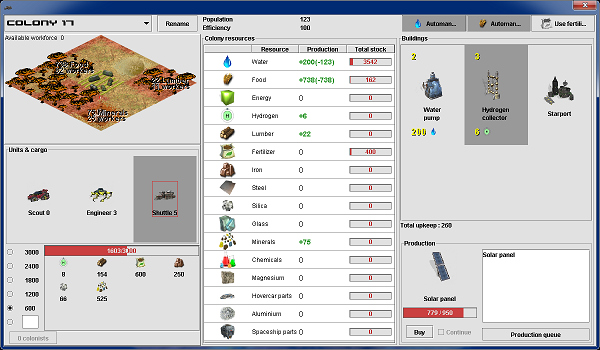

Colony screen
The colony screen can be used to view and manage Martian colonies.
It provides an interface to view colony's resources, manage its
workforce, set its production, and load / unload cargo to / from units
inside the colony.

Colony screen is composed of the following sections: